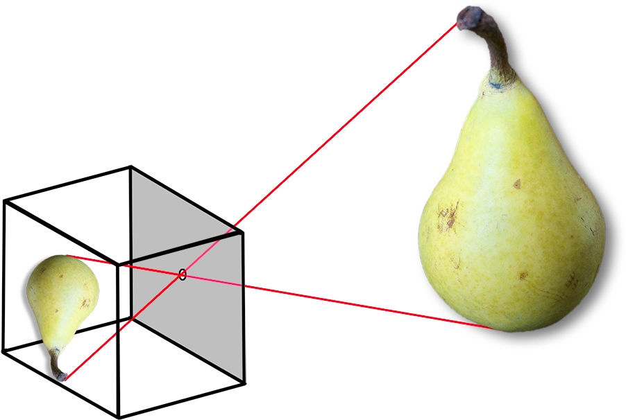
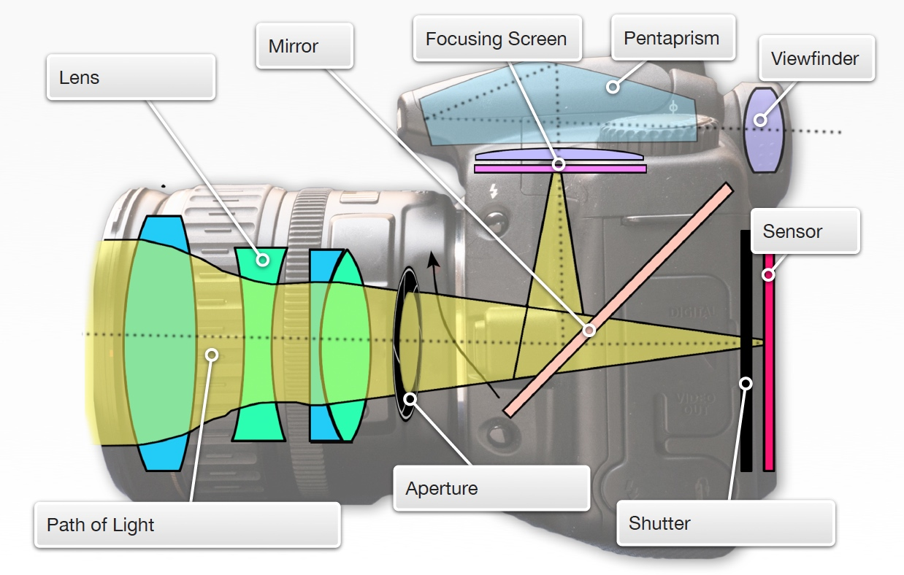
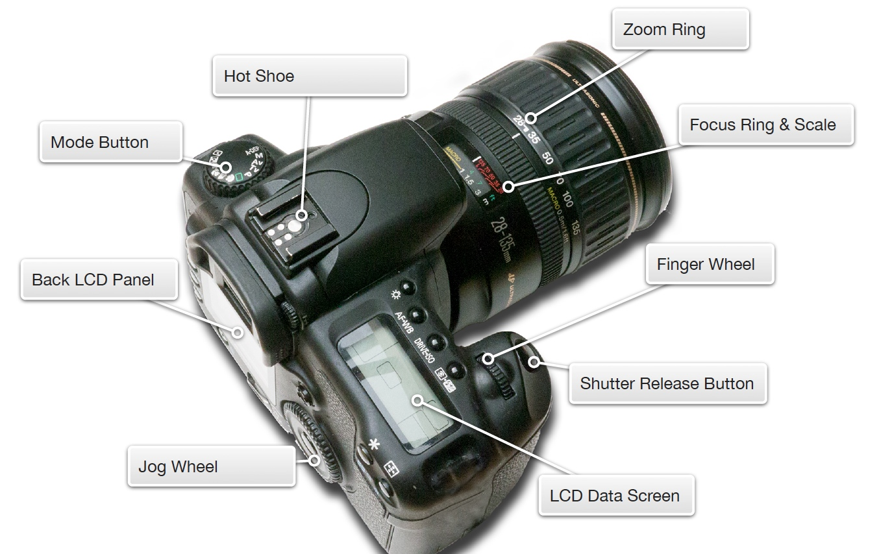

Cameras come in many forms and many types, but no matter whether the camera is costly or inexpensive, uses film or digital sensors, has one lens or can use many lenses, all cameras have the same basic characteristics.
2.1 Anatomy of a Camera
THE BASICS
- A light-tight box
- A lens
- A shutter to regulate time of exposure
- An aperture to regulate volume of light
- A place to put light-sensitive material
- A viewfinder to see what the camera will make a photograph of.
A camera is actually a very simple device. Or, at least, it can be. To make a camera, all that’s really required is a light-tight box, a lens that can focus light rays through one side of the box, something to regulate the volume of light that comes into the box (a variable aperture), something to regulate how long the light is allowed to come into the box (a shutter) and something to record what the projected light is showing. That’s it; it’s really pretty simple.
In fact, it can be even more simple; a small hole in the side of a light-tight box will project an image of whatever is outside the box onto the inside of the box. The hole is the aperture; all you need is a shutter to regulate the time of light and something to record the image and you have a camera.
Of course, modern cameras have made a simple machine more complex by adding a wide variety of features to control the camera’s functions. But, no matter how sophisticated the camera is, no matter how much it costs and no matter what style or type of camera it is, every camera in the world has the same basic simple characteristics. Use the interactive graphics on the next two pages to help familiarize yourself with the parts of a DSLR camera’s inner and outer workings.

Use the interactive graphic below to help familiarize yourself with the inside elements of a typical DSLR camera.

A Digital Single Lens Reflex Camera – The Inside View
Use the interactive graphic below to help familiarize yourself with the outside elements of a typical DSLR camera.

A Digital Single-Lens Reflex Camera – The Outside View
2.2 Types of Cameras
THE BASICS
- Point-and-shoot
- Mirrorless
- Single-lens reflex
- Medium format
- Large Format
- Camera Phones
We can crop a section out of the image, but we would have to accept a smaller image to print, as there aren’t enough pixels to make a very large image.
All cameras are more or less the same; they need the elements you just read about in the previous section. No matter how much the camera costs or what its features are, it has the same basic elements of light-tight box, lens, shutter, aperture, etc.
So, if every camera is the same, then why are there different types of cameras? The answer is similar to why there are different types of cars; there are different things we want cameras to do, and their design changes to accommodate different needs. Small cameras are great for their portability and their ability to be unobtrusive. Larger cameras are typically able to record greater detail because of their larger sensors or because of their higher quality lenses… or both.
As technologies have evolved, different camera types and styles have been created to take advantage of new ways of making photographs so photographers can have the right tool for the job. Tap the presentation at right to see a few of the different types of cameras that photographers use.
Pixels & Megapixels
Pixels are the building blocks of the digital image world. They are they tiny picture elements (hence "pixel") that make up the image. The more of them you have, the greater the potential you have for detail in a picture. Think of a mosaic picture; the more tiles there are in the picture, the more detail it can contain.
Camera pixel sensors come in an x-y grid that record the amount and color of the light in a scene. We can count the number of pixels horizontally and vertically on that grid and come up with the total number of pixels a camera has by multiplying one number by the other. So, a camera that has 3072 pixels by 2304 pixels would have 7,077,888 total pixels, or, rounding up, 7.1 megapixels. Mega means "million" and the term megapixel has become the standard that is used to measure the relative resolution of cameras. The greater the number of pixels a camera has the more its images can be enlarged before pixels can be seen.
One thing to keep in mind when thinking about pixel count is the concept of "cropping" a photograph. When a photograph is cropped to improve its composition or to zero in on the image information that's most important to the viewer, parts of the image are removed. When you crop your digital photographs, you are removing pixels, so the total pixel count of your image goes down, reducing its resolution and therefore the size to which it can be enlarged.